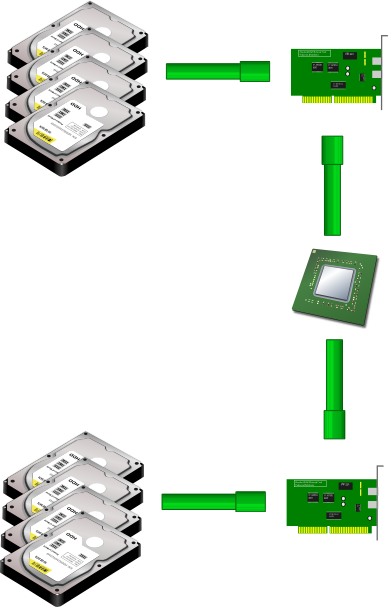
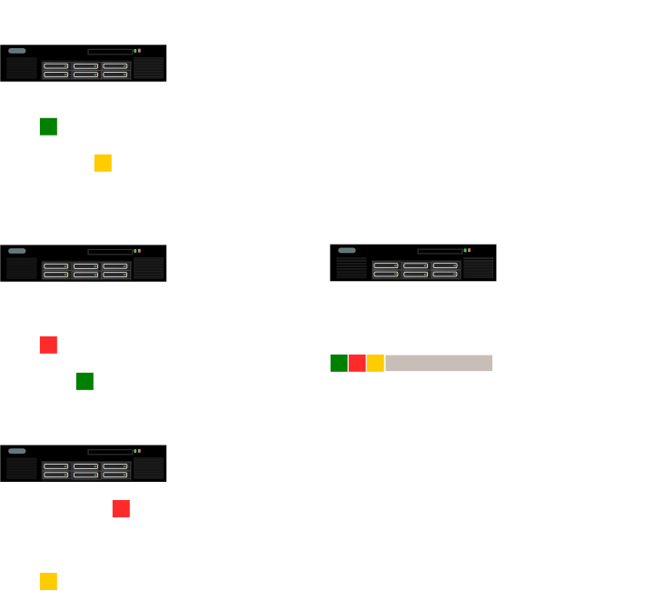
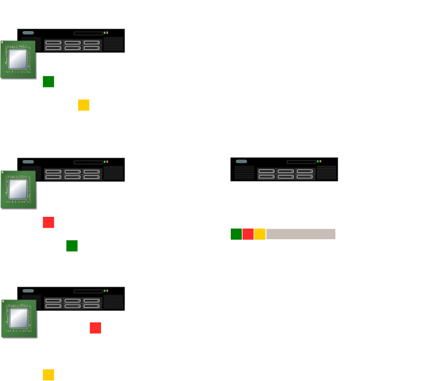

Hadoop
Les principes et l'écosystème
- Emmanuel Bastien
- Octobre 2011
- RivieraDev
| z, ? | toggle help (this) |
| space, → | next slide |
| shift-space, ← | previous slide |
| d | toggle debug mode |
| ## <ret> | go to slide # |
| c, t | table of contents (vi) |
| f | toggle footer |
| r | reload slides |
| n | toggle notes |
| p | run preshow |
Hadoop est un framework Java libre destiné aux applications distribuées et à la gestion intensive des données. Il permet aux applications de travailler avec des milliers de nœuds et des pétaoctets de données. Hadoop a été inspiré par les publications MapReduce, GoogleFS et BigTable de Google.

[...]
The Earth Pulled by the Moon
But it was part of the merit of Newton's mighty theory of gravitation that it furnished an explanation even of this age-old mystery. We can see, in broad outlines at any rate, that the theory of universal attraction can be applied to this case. For the moon, Newton taught us, pulls every particle of matter throughout the earth. If we imagine that part of the earth's surface which comprises the Pacific Ocean, for instance, to be turned towards the moon, we see that the moon's pull, _acting on the loose and mobile water_, would tend to heap it up into a sort of mound. The whole earth is pulled by the moon, but the water is more free to obey this pull than is the solid earth, although small tides are also caused in the earth's solid crust. It can be shown also that a corresponding hump would tend to be produced on the other side of the earth, owing, in this case, to the tendency of the water, being more loosely connected, to lag behind the solid earth. If the earth's surface were entirely fluid the rotation of the earth would give the impression that these two humps were continually travelling round the world, once every day. At any given part of the earth's surface, therefore, there would be two humps daily, i.e. two periods of high water. Such is the simplest possible outline of the gravitational theory of the tides.
[...]
cat book.txt | \
tr -s "[:punct:][:space:]" "\n" | \
sort | \
uniq –c | \
cat > wordcounts cat book.txt | \
MAPPER | \
sort | \
REDUCER | \
cat > wordcountsEntrée: une partie des données
Sortie: une collection de paires clé-valeur
Entrée: toutes les valeurs pour une clé
Sortie: résultat final


public void map(
LongWritable key, Text value,
OutputCollector<Text, IntWritable> output,
Reporter reporter) throws IOException {
String line = value.toString();
StringTokenizer tokenizer = new StringTokenizer(line);
Text word = new Text();
IntWritable one = new IntWritable(1);
while (tokenizer.hasMoreTokens()) {
word.set(tokenizer.nextToken());
output.collect(word, one);
}
}public void reduce(
Text key,
Iterator<IntWritable> values,
OutputCollector<Text, IntWritable> output,
Reporter reporter) throws IOException {
int sum = 0;
while (values.hasNext()) {
sum += values.next().get();
}
output.collect(key, new IntWritable(sum));
}#!/usr/bin/env ruby
STDIN.each do |line|
line.scan(/\w+/) do |word|
STDOUT.puts "#{word}\t1"
end
end#!/usr/bin/env ruby
key, sum = nil, 0
STDIN.each do |row|
k, v = row.split "\t"
if key != k
STDOUT.puts "#{key}\t#{sum}" if key
key, sum = k, 0
end
sum += v.to_i
end
STDOUT.puts "#{key}\t#{sum}" if keyCREATE EXTERNAL TABLE Text(word STRING)
LOCATION "/samples/words";
FROM Text
INSERT OVERWRITE DIRECTORY "/tmp/wordcounts"
SELECT word, COUNT(word) as totals
GROUP BY word;lines = LOAD '/samples/book.txt' USING TextLoader();
words = FOREACH lines GENERATE FLATTEN(TOKENIZE($0));
grouped = GROUP words BY $0;
counts = FOREACH grouped GENERATE group, COUNT(words);
STORE counts INTO '/tmp/wordcounts' USING PigStorage();cascade 'wordcount' do
flow 'wordcount' do
source 'input', tap('/samples/book.txt')
assembly 'input' do
each 'line', :function => regex_split_generator(
'word',
:pattern => /[.,]*\s+/
)
group_by 'word' { count }
group_by 'count', :reverse => true
end
sink 'input', tap('/tmp/wordcounts')
end
end.complete(myproperties)